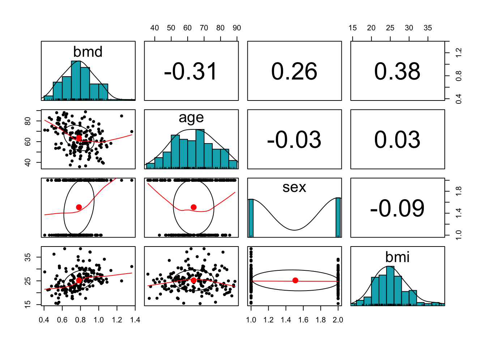
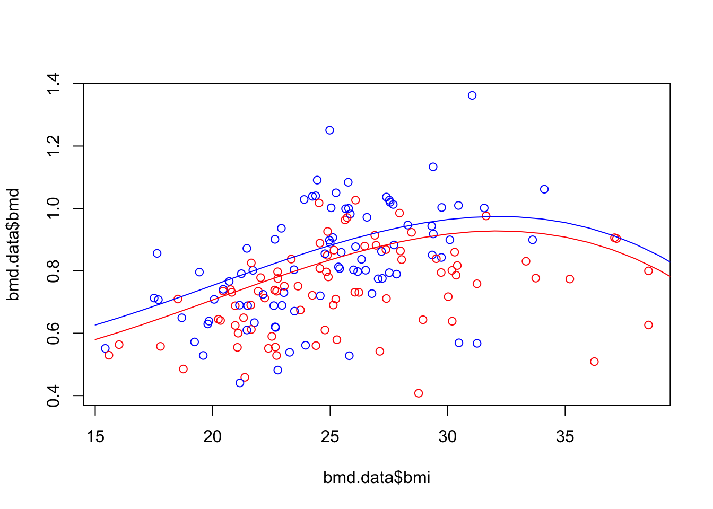
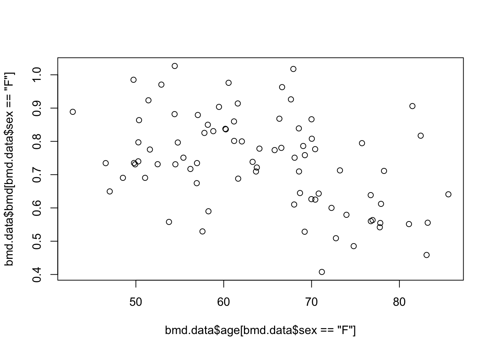

1 Linear Regression
1.1 Introduction
You should be familiar with linear regression, so this section is likely a review of this model. Also, linear regression is a well established method and it is well studied, both from the theoretical and practical perspective. Therefore, there are many aspects that are referred in the textbook but we will not explore much in this section, such as, outliers, testing, heteroscedasticity, leverage power, but you should be familiar with these terms.
1.2 Readings
Read the following chapters of An introduction to statistical learning:
- 3.1 Simple Linear Regression
- 3.2 Multiple Linear Regression
- 3.3 Other Considerations in the Regression Model
1.3 Practice session
Task 1 - Fit a linear model
With the bmd.csv dataset, we want to fit a linear model to predict bone mineral density (BMD) based on AGE, SEX and BMI (BMI has to be computed) and we want to compute the \(R^2\) and MSE for the models that were fitted.
Let’s first read the data and compute “BMI”
#libraries that we will need
library(psych) #for the function pairs.panels
set.seed(1974) #fix the random generator seed #read the dataset
bmd.data <-
read.csv("https://www.dropbox.com/s/c6mhgatkotuze8o/bmd.csv?dl=1",
stringsAsFactors = TRUE)
bmd.data$bmi <- bmd.data$weight_kg / (bmd.data$height_cm/100)^2
summary(bmd.data)## id age sex fracture weight_kg
## Min. : 35 Min. :35.81 F:83 fracture : 50 Min. :36.00
## 1st Qu.: 2018 1st Qu.:54.42 M:86 no fracture:119 1st Qu.:56.00
## Median : 6702 Median :63.49 Median :64.50
## Mean : 9103 Mean :63.63 Mean :64.67
## 3rd Qu.:17100 3rd Qu.:72.08 3rd Qu.:73.00
## Max. :24208 Max. :88.75 Max. :96.00
## height_cm medication waiting_time bmd
## Min. :142.0 Anticonvulsant : 9 Min. : 5.00 Min. :0.4076
## 1st Qu.:154.0 Glucocorticoids: 24 1st Qu.: 9.00 1st Qu.:0.6708
## Median :160.5 No medication :136 Median :14.00 Median :0.7861
## Mean :160.3 Mean :19.74 Mean :0.7831
## 3rd Qu.:166.0 3rd Qu.:24.00 3rd Qu.:0.8888
## Max. :177.0 Max. :96.00 Max. :1.3624
## bmi
## Min. :15.43
## 1st Qu.:22.15
## Median :24.96
## Mean :25.20
## 3rd Qu.:27.55
## Max. :38.54Before we model, let’s look at the correlation structure of the variables involved
pairs.panels(bmd.data[c("bmd", "age","sex", "bmi")],
method = "pearson", # correlation method
hist.col = "#00AFBB",
density = TRUE, # show density plots
ellipses = TRUE # show correlation ellipses
)
We fit a linear model for BMD and evaluate the R-squared
#Fits a linear model with fixed effects only
model1.bmd <- lm(bmd ~ age + sex + bmi, data = bmd.data)
summary(model1.bmd)##
## Call:
## lm(formula = bmd ~ age + sex + bmi, data = bmd.data)
##
## Residuals:
## Min 1Q Median 3Q Max
## -0.38207 -0.07669 -0.00654 0.07888 0.51256
##
## Coefficients:
## Estimate Std. Error t value Pr(>|t|)
## (Intercept) 0.6063945 0.0834051 7.270 1.36e-11 ***
## age -0.0041579 0.0008625 -4.821 3.23e-06 ***
## sexM 0.0949602 0.0213314 4.452 1.56e-05 ***
## bmi 0.0155913 0.0024239 6.432 1.30e-09 ***
## ---
## Signif. codes: 0 '***' 0.001 '**' 0.01 '*' 0.05 '.' 0.1 ' ' 1
##
## Residual standard error: 0.138 on 165 degrees of freedom
## Multiple R-squared: 0.3254, Adjusted R-squared: 0.3131
## F-statistic: 26.53 on 3 and 165 DF, p-value: 4.677e-14## [1] 0.01859697TRY IT YOURSELF:
- Fit a linear model with the interaction age*sex - call it model 2
See the solution code
- Fit a linear model with the the interaction age*sex and cubic effect for BMI - call it model 3
See the solution code
#Fits a linear model with an interaction and polynomial f
model3.bmd <- lm(bmd ~ age*sex + bmi + I(bmi^2) + I(bmi^3),
data = bmd.data)
#You could use the poly() function to fit the same model
#however, poly() will use orthogonal polynomials
#so the coefficients will not be the same as above
#summary(lm(bmd ~ age*sex + poly(bmi,3) , data = bmd.data))
summary(model3.bmd)
mean(model3.bmd$residuals^2) #MSETask 2 - Predicting from a linear model
We first plot the scatter for BMD and BMI, then get the predictions from model 3 in task 1, for a new data where age=50, sex=F and we let BMI vary from 15 to 40. We also compute the predictions for males with similar characteristics. Finally, we add the fitted lines to the plot.
#Scatter plot of BMD and BMI
plot(bmd.data$bmi, bmd.data$bmd,
col = ifelse(bmd.data$sex=="F", "red", "blue"))
#prediction from model b) in task 1
bmd.f50 <- predict(model3.bmd,
newdata = data.frame(age=50, sex="F", bmi=seq(15,40)))
bmd.m50 <- predict(model3.bmd,
newdata = data.frame(age=50, sex="M", bmi=seq(15,40)))
lines(seq(15,40), bmd.f50, col="red")
lines(seq(15,40), bmd.m50, col="blue")
TRY IT YOURSELF:
- Produce the scatter plot for BMD and AGE, only for women
See the solution code

- Predict the BMD for women, with a BMI=25 and AGE between 40 and 90, using model 3 from task 1 and plot the prediction
See the solution code
#Scatter plot of BMD and AGE
plot( bmd.data$age[bmd.data$sex=="F"], bmd.data$bmd[bmd.data$sex=="F"])
#prediction from model 3 in task 1
#(the prediction line only )
bmd.bmi25 <- predict(model3.bmd,
newdata = data.frame(age=seq(40,90), sex="F", bmi=25))
lines(seq(40,90), bmd.bmi25)
1.4 Exercises
Solve the following exercises from the An introduction to statistical learning book:
Exercise 4 (page 122)
Exercise 13 (page 126)
With the fat dataset in the
library(faraway), we want to fit a linear model to predict body fat (variable brozek) using the variable abdom and age. After loading the library, use the commanddata(fat)to load the dataset.recode the variable age into age_cat with the following categories: <30, 30-50 and >50
fit a linear model using abdom and age_cat and compute the mean squared error
fit a linear model using abdom , age_cat and the interaction between these two predictors. Comment on the change in the mean squared error of this model compared to the one without the interaction.